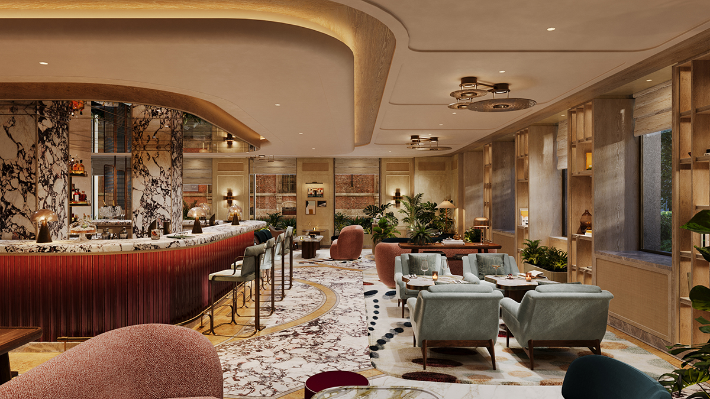

Six Senses has opened at Via Brera 19, directly opposite the Pinacoteca di Brera and a short walk from the Duomo. Sixty-nine rooms, a sky pool, a fifty-foot indoor pool and interiors by Tara Bernerd that treat arabescato marble with the reverence Milan reserves for its best paintings. It is the hotel Brera has been waiting for.
Milan’s hotel market has transformed in the past five years. The Bulgari on Via Privata Fratelli Gabba raised the standard. The Four Seasons on Via Gesù maintained it. The Portrait Milano brought Ferragamo’s eye to an entire city block. But Brera — the neighbourhood that houses Milan’s finest art gallery, its best independent bookshops and its most interesting aperitivo bars — has not had a hotel that matches its cultural weight. Six Senses changes that.
The building on Via Brera has been reconfigured by Tara Bernerd & Partners, the London-based studio that has made a speciality of hotels that feel designed rather than decorated. Bernerd’s approach in Milan draws directly from the city’s craft traditions. Arabescato marble from Carrara lines the lobby and bathrooms. Antique brass detailing appears on door handles, light fittings and bathroom fixtures. Handmade smoked glass panels divide public spaces with the same material vocabulary that Milanese furniture designers have used for decades. Textured ceilings and mosaic borders complete a palette that is luxurious without being theatrical — a distinction that matters in a city where restraint is a form of taste.
The rooms
Sixty-nine rooms divide into fifty-three standard rooms and sixteen suites. Two suites feature private plunge pools. One has a forty-one-foot pool on a terrace that overlooks the Brera rooftops. Rates start at around twelve hundred euros per night on a bed-and-breakfast basis, which positions Six Senses at the top of Milan’s luxury market but below the stratospheric pricing of the city’s established palace hotels.
The rooms are generous by Milanese standards. Bernerd has used natural linen, brushed oak and soft leather in a colour palette that moves between cream, stone and muted sage. The bathrooms are the highlight: floor-to-ceiling arabescato marble with brass rain showers and freestanding tubs positioned to catch the light from tall windows. It is the kind of bathroom where you cancel your dinner reservation and order room service instead.
Brera has the Pinacoteca, the bookshops, the aperitivo bars and now the hotel. Six Senses is the final piece. The neighbourhood is complete.
Isabelle RoweThe spa
Six Senses built its reputation on wellness, and the Milan property does not compromise. The spa occupies the lower levels and includes a fifty-foot indoor pool, two saunas, a steam room and a cold plunge pool. Treatment rooms are lined in the same smoked glass that appears in the public areas, creating a continuity of material that makes the transition from lobby to spa feel like moving deeper into the building rather than descending into a basement.
The Earth Lab, a signature Six Senses feature, occupies a prominent position near the hotel’s entrance. It is part education centre, part sustainability showcase, and it reflects the brand’s commitment to environmental responsibility in a way that feels integrated rather than performative. Milan’s fashion industry generates enormous waste, and a hotel in its creative centre that takes sustainability seriously is making a statement whether it intends to or not.

The hidden courtyard: Milan’s luxury hotels compete on their private gardens as fiercely as their lobbies. Photography courtesy of Robb Report
The location
Via Brera is the street that defines Milan’s artistic identity. The Pinacoteca di Brera, directly opposite the hotel, houses Raphael, Caravaggio and Mantegna. The Brera Academy of Fine Arts sits next door. The street itself is lined with galleries, antique dealers and the kind of neighbourhood restaurants where fashion editors eat when they are not being photographed. Six Senses could not have chosen a more culturally loaded address.
The location also makes sense during fashion week. Via Brera is a fifteen-minute walk from the Quadrilatero della Moda — Via Montenapoleone, Via della Spiga, Via Sant’Andrea — and an easy taxi from the show venues that have spread across the city. But the real advantage is what you return to. After a day of shows, the rooftop bar at Six Senses offers a view over the Brera rooftops and a cocktail menu that takes its cues from the Milanese aperitivo tradition. The hidden courtyard garden, planted with mature trees, provides the silence that fashion week conspicuously lacks.
The verdict
Six Senses Milan arrives at a moment when the city’s hotel market is arguably the most competitive in Europe. The Bulgari remains the industry favourite. Portrait Milano has the Ferragamo cachet. The Four Seasons has history. What Six Senses offers is something none of them quite manage: a location in Brera, a spa that justifies a day off, and a design language that feels Milanese rather than imported. Tara Bernerd has not built a London hotel in Milan or a Bali resort in Italy. She has built a Milan hotel, and the distinction is everything.
Rates from €1,200 per night. Opening late 2026. Via Brera 19, Milan.